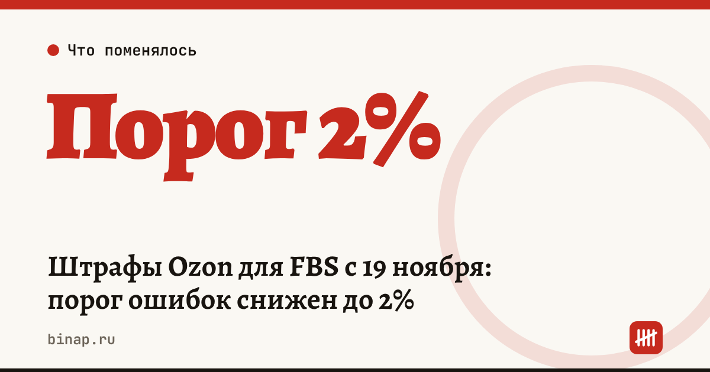

Штрафы Ozon для FBS с 19 ноября: порог ошибок снижен до 2%

С 19 ноября 2026 года Ozon начнёт штрафовать продавцов на FBS, если индекс ошибок превысит 2%, а не 5%, как сейчас. Штраф — процент от стоимости отправления, и он растёт вместе с индексом. Кто ставит в настройках срок отгрузки больше 6 часов, заплатит ещё и отдельный сбор.
Коротко
- Дата — 19 ноября 2026 года, касается схемы FBS: продавец хранит и собирает заказы сам.
- Порог индекса ошибок для штрафа — 2% вместо 5%.
- Индекс — доля заказов за последние две недели, которые продавец отменил или отгрузил с опозданием по своей вине.
- Штраф — от 1% до 8% стоимости товаров в отправлении; по данным «Клерка», максимум 2 000 ₽ за просрочку и 4 000 ₽ за отмену.
- Сбор за срок отгрузки больше 6 часов — от 0,25% до 3% стоимости товаров.
Сроки, изменения и разборы для ИП и самозанятых — каждое утро в Telegram и MAX. Подпишитесь, чтобы не пропустить.
Что меняется
Штрафы по индексу ошибок (по данным «Клерка»; правила на портале продавца Ozon мы не открывали — сверьте в своём кабинете):
| Индекс ошибок | Просрочка | Отмена |
|---|---|---|
| до 2% | нет | нет |
| 2,1–5% | 1% | 2% |
| 5,1–10% | 2% | 4% |
| 10,1–20% | 4% | 8% |
| выше 20% | 8% | 8% |
Для сравнения: по данным «Коммерсанта», Ozon возобновил штрафы 22 сентября, и до 19 ноября при индексе меньше 5% их нет, при 5,1–10% — 1%, выше 10% — 2%.
- Индекс «короткий». Его считают за две недели: плохая неделя быстро забывается, но и одна неудачная отгрузка быстро портит показатель.
- Сбор за долгую отгрузку. Продавец сам указывает, сколько времени ему нужно на передачу заказа. Если больше 6 часов — сбор 0,25–3% от стоимости товаров, в зависимости от заявленного срока.
- Цены. По данным «Коммерсанта», в «ПЭК: Фулфилмент» ждут роста цен на маркетплейсах на 3–5%; в «МойСкладе» считают, что сильнее всего изменения ударят по небольшим продавцам с ограниченным складом и по товарам с низкой маржой.
Пример: сколько стоят ошибки
Расчёт редакции. Продавец за две недели отгрузил 200 заказов, средняя стоимость отправления — 2 500 ₽. Опоздал с 4 заказами и отменил 2.
| Показатель | Расчёт | Итог |
|---|---|---|
| Индекс ошибок | (4 + 2) ÷ 200 | 3% — с 19 ноября это диапазон 2,1–5% |
| Штраф за просрочки | 4 × 2 500 × 1% | 100 ₽ |
| Штраф за отмены | 2 × 2 500 × 2% | 100 ₽ |
| Всего за две недели | 200 ₽ |
Сумма небольшая, но при индексе 11% ставки уже 4% и 8%. А сбор за срок отгрузки больше 6 часов берут с каждого заказа: на 200 отправлениях по 2 500 ₽ это от 1 250 до 15 000 ₽ (расчёт редакции: 200 × 2 500 × 0,25% и × 3%).
Что сделать до 19 ноября
- Откройте индекс ошибок за последние две недели. Если он выше 2%, найдите причину: поздняя сборка, нет товара, очередь на приёмке.
- Проверьте срок отгрузки в настройках. Если склад успевает передавать заказы за 6 часов — поставьте не больше 6 часов, чтобы не платить сбор.
- Уберите с витрины FBS товары, которых нет в наличии: отмена стоит вдвое дороже просрочки.
- Если отгружаете через пункт приёма, проверьте, сколько раз в день нужно передавать заказы, и посчитайте, во что обойдутся лишние поездки.
- Заложите штрафы и сбор в цену товара. Проверить прибыль с одной продажи можно в калькуляторе юнит-экономики селлера, из чего складываются расходы на склад — в статье Фулфилмент для селлера: из чего складывается цена.
Если штрафы съедают оборотные деньги, сравните, сколько стоит кредит под выручку маркетплейса. Если пострадал товар на складах площадки — проверьте, положена ли вам отсрочка налогов для продавцов WB и Ozon.
Частые вопросы
Меня оштрафуют, если задержка случилась по вине Ozon? По данным «Коммерсанта», задержки из-за сбоев инфраструктуры Ozon в индекс не входят. Сохраняйте подтверждение, что вы передали заказ вовремя.
Касается ли это продавцов на FBO? Изменения описаны для FBS — схемы, где продавец сам хранит товар и передаёт заказы.
Как быстро можно исправить индекс? Его считают за последние две недели, поэтому после двух недель без просрочек и отмен он восстановится.